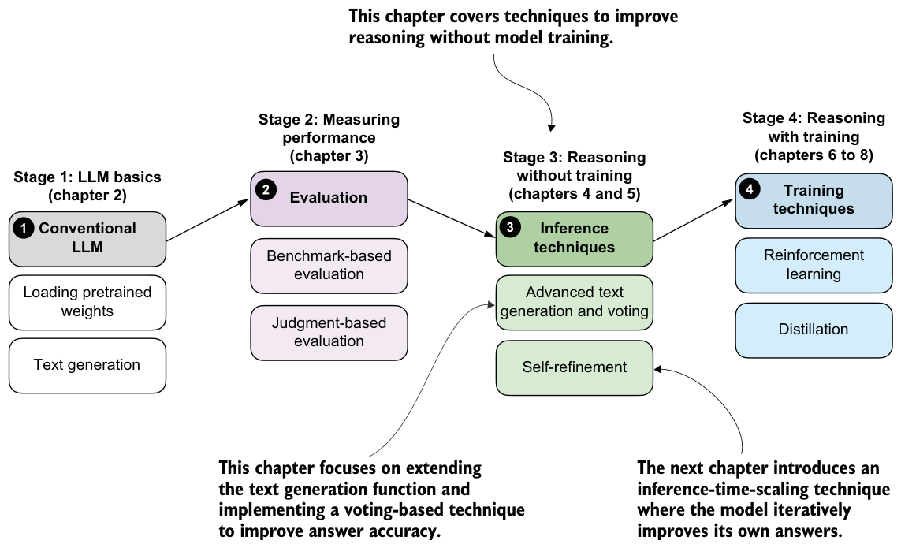
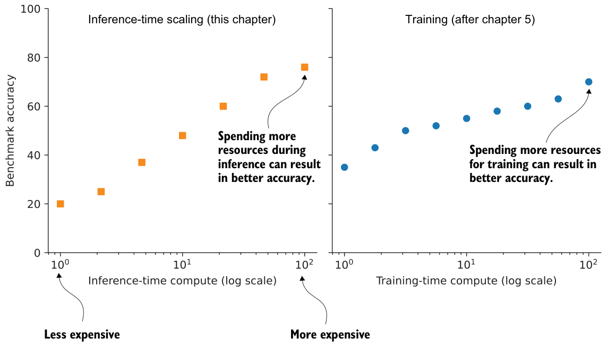
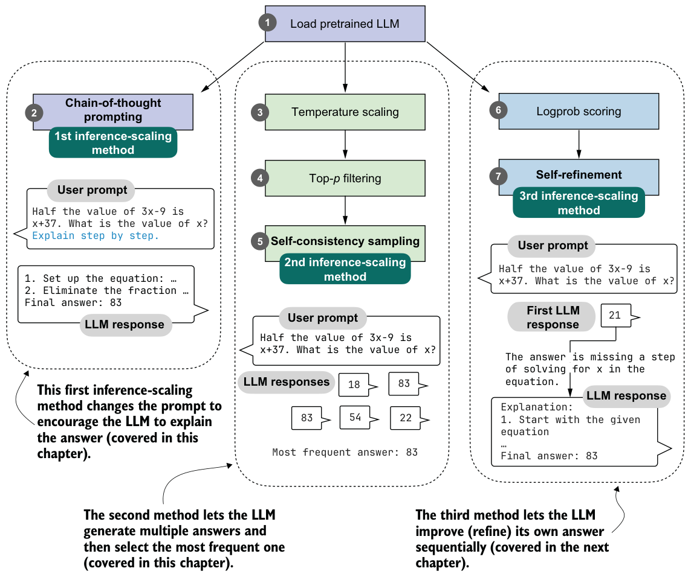

Improving reasoning with inference-time scaling
This chapter covers
- Prompting an LLM to explain its reasoning to improve answer accuracy
- Modifying the text generation function to produce diverse responses
- Improving reasoning reliability by sampling multiple responses
Reasoning performance and answer accuracy can be improved without retraining or modifying the model itself. As shown in the overview in figure 4.1, this chapter covers two inference-time-scaling methods. These methods operate during inference, when the model generates text. As you’ll see later in this chapter, both methods more than double the accuracy of the base model used in previous chapters.
We’ll first look at what inference-time scaling is, before we discuss the inference methods shown in figure 4.1.

4.1Introduction to inference-time scaling
There are two main strategies to improve reasoning:
- Increasing training compute
- Increasing inference compute (also known as inference-time scaling or test-time scaling)
These two approaches are illustrated in figure 4.2, and the plots make it look like we can improve reasoning either by increasing training-time compute or inference-time compute. In reality, LLMs are usually designed to improve reasoning by combining heavy training-time compute (a topic of future chapters) and increased inference-time compute (the topic of this chapter).
Inference-time compute scaling (also called inference-time scaling or test-time compute scaling) means increasing computation at answer-generation time, after the model has already been trained, to improve the quality of its response. Instead of changing the

model’s weights, we let the trained model do more work per question, such as by generating more tokens and “thinking” longer, sampling multiple answers, or successively refining its answer.
In this book, we’ll focus on three practical and foundational inference-time techniques (illustrated in figure 4.3):
- Method 1: Extending the chain-of-thought response to prompt the model to explain its reasoning. This simple technique can substantially improve accuracy.
- Method 2: Parallel sampling via self-consistency, where the model generates multiple responses and selects the most frequent one.
- Method 3: Iterative self-refinement, where the model reviews and improves its own reasoning and answers across multiple steps.
These methods fall under the category of inference-time scaling because they cause the model to generate more tokens, which increases compute requirements during inference. They improve accuracy while making inference more expensive, which is a common theme of inference-time-scaling techniques. In this chapter, we’ll discuss the first two methods; the third will be covered in chapter 5.

The first method improves answer accuracy by prompting the model to explain its reasoning, a simple yet highly effective approach.
The second method samples multiple responses for the same input and selects the most frequent one. We’ll do this by extending the text generation function introduced in the previous chapter and implementing self-consistency, a voting-based inference-time-scaling technique.
In total, I evaluated more than ten different inference-time-scaling techniques across thousands of experiments. I chose the three methods illustrated in figure 4.3 because they combine three desirable properties: they improve accuracy on the model used here, they represent the main practical paradigms of inference-time scaling, and they are simple enough to implement from scratch without too much extra machinery. They also cover the two main patterns: generating longer responses and generating multiple responses.
Longer responses that include reasoning and explanations (methods 1 and 3) are what we typically expect from reasoning models. Parallel sampling (method 2) is also widely used in production systems, such as Claude 4 (as described in the May 2025 introduction of Claude 4: https://www.anthropic.com/news/claude-4).